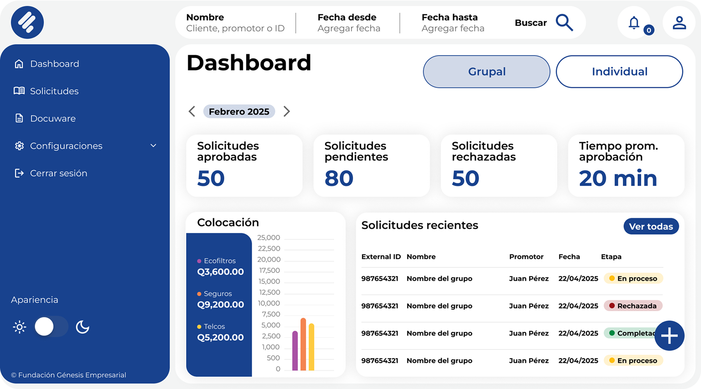
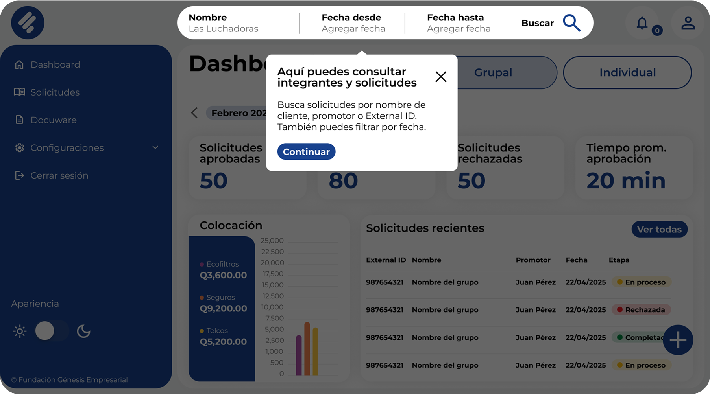

As a UX Developer at a Guatemalan non-profit with over 4,000 employees, I helped
redesign their in-house apps using the Design Thinking approach to enhance the user experience for their
group-loan operations. My role included conducting organization-wide research to empathize with users,
defining key pain points, and ideating solutions with a team of six developers and various stakeholders. I
then prototyped and tested the designs with real users. The final solution improved the user experience by
150% according to feedback and saved the company over 10,000 man-hours per month.
Case Study
Project Overview
The Problem
The company faced significant UX challenges in their in-house apps used by over 4,000 employees to manage
group loans. Users commonly reported frustration and dissatisfaction when interacting with these tools. In
addition to these issues, the company lacked a Design System to ensure structure, consistency, and branding
across their applications. This often resulted in mismatched user interfaces, redundant design decisions, and
delays in development—ultimately slowing down the delivery of solutions by the Software Development team.
The Goal
The goal was to truly understand and empathize with our users—to fall in love with their needs, goals,
motivations, and pain points. By doing so, we aimed to deliver solutions tailored to their real-world
challenges, reduce time on task and error rates, increase app adoption, enhance the overall user experience,
and ultimately lower company costs by eliminating redundant tasks.
My Role
As a User Experience Designer and Developer, I led the project’s research and design process by conducting
both quantitative and qualitative studies. I collaborated closely with cross-functional teams, developers,
stakeholders, and final users. My responsibilities included prototyping solutions, running usability tests,
and ensuring the final design provided an intuitive, multi-device, and efficient user experience.
Responsibilities
I was tasked with conducting a foundational usability study, performing both quantitative and qualitative
research, collaborating with stakeholders, developers, and users to define the app's goals, facilitating
ideation sessions with the development team based on user needs, prototyping low- and high-fidelity mockups in
Figma, and conducting usability studies to refine the design based on feedback.
User Research
Summary
We conducted a user research study with 330 participants to identify issues in GFlow focusing on their
motivations, frustrations, and overall experience. 72% reported slow system performance, 58% had trouble
uploading documents, and 65% believed the loan approval process could be faster. Users also pointed out issues
with geolocation, system crashes, and the need to consult multiple applications, all of which impacted their
efficiency. These insights guided improvements in performance, usability, and automation, ultimately
enhancing the GFlow experience.
In addition, we conducted a Foundational Usability Study with 251 participants, including screen recordings of
6 users performing key tasks in GFlow. We uncovered recurring issues with image uploads, geolocation, loan
approvals, and portfolio management. The System Usability Scale (SUS) yielded an average score of 44/100,
suggesting that while the tool is functional, it has significant room for improvement. Users acknowledged its
usefulness and efficiency but also highlighted problems with speed, confusion, and navigation errors. These
findings informed the optimizations needed to improve the overall user experience.
User Personas
Ana
“Ana is detail-oriented and seeks efficiency in her work, but the errors in GForm cause her stress
and waste her time.”
Goals
Process applications without errors or repetitive steps.
Provide fast and efficient service.
Frustrations
She has to manually correct data like names with “ñ” and co-signers’ last names.
She needs to use multiple applications to complete a single process.
A customer arrives at the branch to request a loan, but Ana has to correct his name and
re-enter data across several platforms. The wait makes the customer uncomfortable and slows down her
work.
Information Architecture
(Click on image to enlarge)
Paper Wireframe
(Click on image to enlarge)
Low-fidelity Prototype
(Click on image to enlarge)
High-Fidelity Prototype
(Click on image to enlarge)
Usability Study
A Usability Study was conducted using the Hi-Fi Prototype, where real users were asked to complete five
simple tasks and respond to a follow-up System Usability Scale (SUS) survey. The results revealed a 150%
improvement in the overall user experience. One user shared her feedback after testing the prototype: “This
new design feels like someone went into my head and designed a solution to all my problems at work.”
We conducted a moderated usability study with participants in Guatemala (On site), where participants went
through the usability study in their real work environments. We interviewed 5 people from mixed backgrounds,
genders, and
abilities.
We then gathered the data and organized it to identify themes, which resulted in the following insights:
Round 1 Findings
Users initially felt a bit lost due to the app’s significantly updated interface. This highlighted the
need for an onboarding tutorial for first-time users.
Some terminology caused confusion — for example, the word "Save" was unclear to users who were
accustomed to "Send." These labels were updated for clarity.
Given the insights we found through our Usability Study, we adapted the design to improve the user
experience and make the app easier to use.
Before And After


Accesibility
To improve the app’s accessibility, we implemented both Light and Dark modes and selected high-contrast color
combinations to ensure readability. Additionally, we designed a “Change Language” feature that allows users to
switch between Spanish and Mayan languages, promoting inclusivity and equity for indigenous communities.
Impact
The final solution led to a 150% improvement in user experience, as measured through a System Usability Scale
(SUS) and
direct user feedback. Employees reported feeling more confident and less frustrated while using the system,
and task completion times were significantly reduced.
By streamlining workflows, reducing redundant steps, and minimizing system errors, the new interface saved the
company over 10,000 man-hours per month. This translated into increased productivity across teams, faster
credit processing times for customers, and a more consistent and enjoyable user experience throughout the
organization.
In addition, the introduction of a scalable Design System now enables faster implementation of new features
and ensures brand consistency across all internal apps, setting a strong foundation for future growth.
Let's get in touch
Have a project in mind? Let's build something great together!